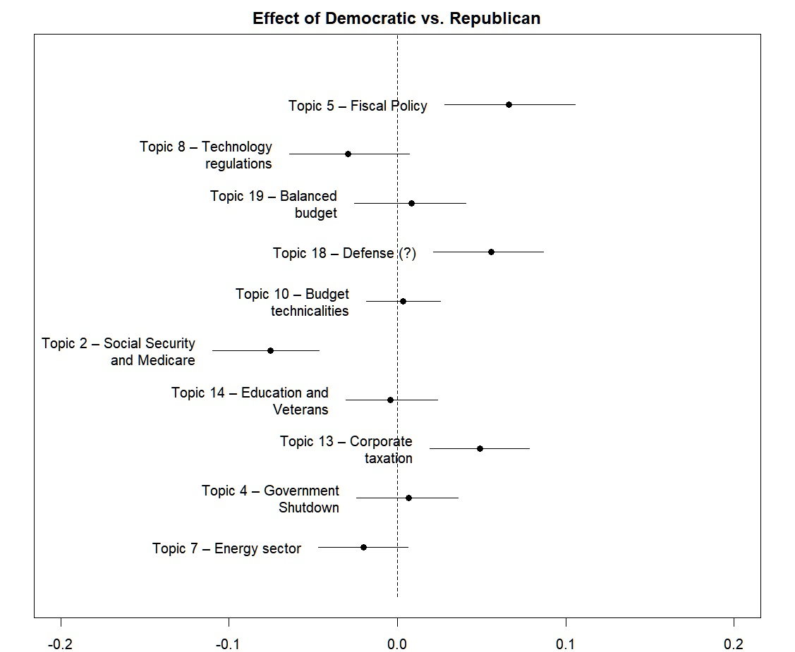

Research | 2023
经济危机时期的再分配辩论：基于结构主题模型的美国预算辩论研究
Debating Redistribution in Times of Economic Crisis: Examining U.S. Budgetary Debates Using Structural Topic Modeling
Philipp Weisenburger 与 Xinyuan Li 共同完成的政治文本分析研究，考察经济危机如何改变美国预算辩论中的议题注意力与党派差异。
A political text analysis coauthored by Philipp Weisenburger and Xinyuan Li, examining how economic crises reshape issue attention and partisan differences in U.S. budgetary debates.
Overview | 项目简介
研究分析了 2002 至 2011 年间的 846 篇美国预算演说，关注经济危机是否改变预算辩论中的再分配议题，以及民主党和共和党在议题强调上是否呈现不同模式。研究对象跨越危机前后时期，为比较注意力变化提供了统一的文本语料。
The study analyzes 846 U.S. budget speeches delivered from 2002 through 2011. It asks whether economic crises change the place of redistribution in budgetary debate and whether Democrats and Republicans emphasize topics differently. The corpus spans periods before and during crisis, enabling a consistent comparison of changes in issue attention.
Process | 过程
研究首先以结构主题模型识别语料中的预算议题，并估计党派和时期等协变量与主题占比之间的关系；随后结合双重差分设计，比较危机前后不同党派的议题变化。模型搭建与 R 实现由两位作者协作完成：大体而言 Philipp 负责模型搭建，Xinyuan 负责 R 语言实现，但研究设计、分析与写作存在交叉。
The research first uses structural topic modeling to identify budgetary topics and estimate how covariates such as party and period relate to topic prevalence. It then combines the model with a difference-in-differences design to compare partisan changes before and during crisis. The coauthors collaborated across model development and R implementation: broadly, Philipp led model construction and Xinyuan led the R implementation, while research design, analysis, and writing overlapped.
Media | 图像与成果

Details | 项目信息
Links | 附件链接
- 原始论文 PDF 因隐私信息暂不公开，待完成安全处理。 | The original paper PDF is withheld pending privacy-safe preparation.